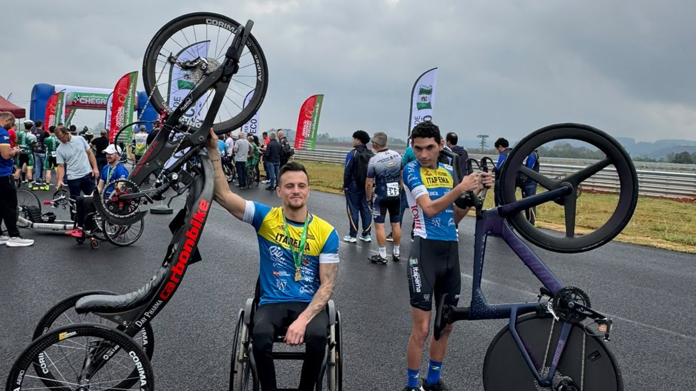

Itapema estreia no Parajasc com ouro e sai de 3 para 33 atletas em um ano
O primeiro ouro desta edição, no arremesso de peso da classe F20.
Campeão da classe H3 no contrarrelógio individual de 4 quilômetros, no Novo Autódromo de Chapecó. Na mesma prova, Diego da Silva fez a estreia dele na competição, pela classe C2.
Em 30 segundos · Modo de Leitura, formato original Santa Informa
Kleverton Dala Corti foi campeão do paraciclismo na classe H3 do Parajasc 2026, nesta quarta-feira (19), em Chapecó. É ouro para Itapema.
Diego da Silva estreou na competição, na classe C2. A Prefeitura falou em ótimo desempenho, mas não divulgou tempo nem colocação.
As provas foram no Novo Autódromo de Chapecó: contrarrelógio individual de 4 km e circuito de apresentação da modalidade.
Kleverton já tinha sido medalhista em 2025. Itapema levou 33 atletas a esta edição e já havia subido ao topo do pódio no arremesso de peso.
Poder PúblicoPublicada em Redação Santa Informa

Itapema voltou a subir no pódio do Parajasc, os Jogos Abertos Paradesportivos de Santa Catarina. Nesta quarta-feira, 19 de agosto, Kleverton Dala Corti foi campeão do paraciclismo na classe H3, garantindo a medalha de ouro para o município. A competição está sendo disputada em Chapecó.
As provas do paraciclismo aconteceram no Novo Autódromo de Chapecó. Os representantes de Itapema participaram do contrarrelógio individual de 4 quilômetros e do circuito de apresentação da modalidade. Contrarrelógio é a prova em que o atleta larga sozinho e corre contra o cronômetro, sem pelotão à frente para cortar o vento. Nela, a resistência do ar responde por quase toda a dificuldade, e o equipamento pesa no resultado tanto quanto a perna.
Kleverton já havia sido medalhista na edição de 2025 e voltou nesta para levar o título da classe. Na foto divulgada pela Prefeitura, ele aparece de cadeira de rodas, com a medalha no peito, erguendo com uma das mãos a handbike, que é a bicicleta movida pela força dos braços.
Diego da Silva disputou o Parajasc pela primeira vez, na classe C2, e aparece na mesma foto segurando uma bicicleta de contrarrelógio, dessas de rodas fechadas. A Prefeitura descreveu a participação dele como ótimo desempenho, sem divulgar tempo nem colocação.
O secretário de Esportes, Paulinho Camargo, disse que os dois "representam muito bem Itapema e mostram a força do nosso paradesporto".
Em 10 de agosto contamos aqui que a Associação Pedala Itapema recebeu uma bicicleta de contrarrelógio comprada com a Emenda Impositiva nº 48, das vereadoras Lorita Montagmer e Zulma Souza. Era a primeira de um conjunto de três que a equipe está montando, com destino aos ciclistas e aos paraciclistas. A prova de quarta em Chapecó foi justamente um contrarrelógio. A Prefeitura não informou qual equipamento cada atleta usou, então a ligação entre uma coisa e outra fica no campo da coincidência de calendário.
Itapema levou 33 atletas a esta edição do Parajasc, em cinco modalidades, depois de ter mandado 3 no ano passado. A delegação já tinha subido ao topo do pódio no primeiro fim de semana, com Eliezer Mateus Pereira no arremesso de peso da classe F20.
O resumo de 30 segundos está no topo e a versão completa é o texto acima. Aqui ficam as três leituras da casa sobre o mesmo assunto.
Clara, a otimista
A foto conta a história melhor que qualquer número. De um lado o campeão, com a medalha no peito. Do outro o estreante, com a bicicleta na mão. Os dois de uniforme da mesma cidade, no mesmo asfalto molhado de Chapecó.
Estreia importa tanto quanto pódio. Foi assim que Kleverton começou, e em 2025 ele já voltava com medalha. Diego pegou a primeira competição agora. Daqui a um ano a gente conversa de novo.
Seu Prudêncio, o criterioso
Merece atenção a falta de dado da competição. Não saiu tempo, não saiu colocação e não saiu quantos disputavam cada classe. Medalha sem tempo publicado é notícia boa que ninguém consegue comparar com a do ano que vem.
Vale acompanhar também a conta do equipamento. A cidade comprou bicicleta de contrarrelógio com emenda impositiva e disputou uma prova de contrarrelógio nove dias depois. Uma sugestão útil: informar qual equipamento foi para qual atleta. Dinheiro público que vira resultado esportivo é uma boa história, e ela só se conta com o registro na mão.
Feita a ressalva, o conjunto é sólido. Sair de 3 para 33 atletas em um ano e voltar com ouro em duas modalidades diferentes, o arremesso de peso e agora o paraciclismo, não é sorte de sorteio. É estrutura montada, com técnico, equipamento e calendário. Isso demora a aparecer e some rápido se parar.
Caco, o sarcástico
Itapema mandou 33 atletas para Chapecó e trouxe ouro. A cidade que vive reclamando de trânsito na temporada agora descobriu que também é boa em ir rápido.
Repare que ninguém posa com a medalha sozinho. Tem que erguer a bicicleta junto, e a bicicleta é maior que o atleta. Faz sentido: ela também treinou.
E o melhor detalhe é a prova ser contra o relógio. Finalmente uma competição em que o adversário não reclama do resultado.
Fontes: Prefeitura de Itapema, publicada em 19 de agosto de 2026.
O primeiro ouro desta edição, no arremesso de peso da classe F20.
De onde veio o dinheiro da bicicleta e por que o equipamento muda a prova.
Outro esporte da cidade que voltou com pódio de fora nesta temporada.